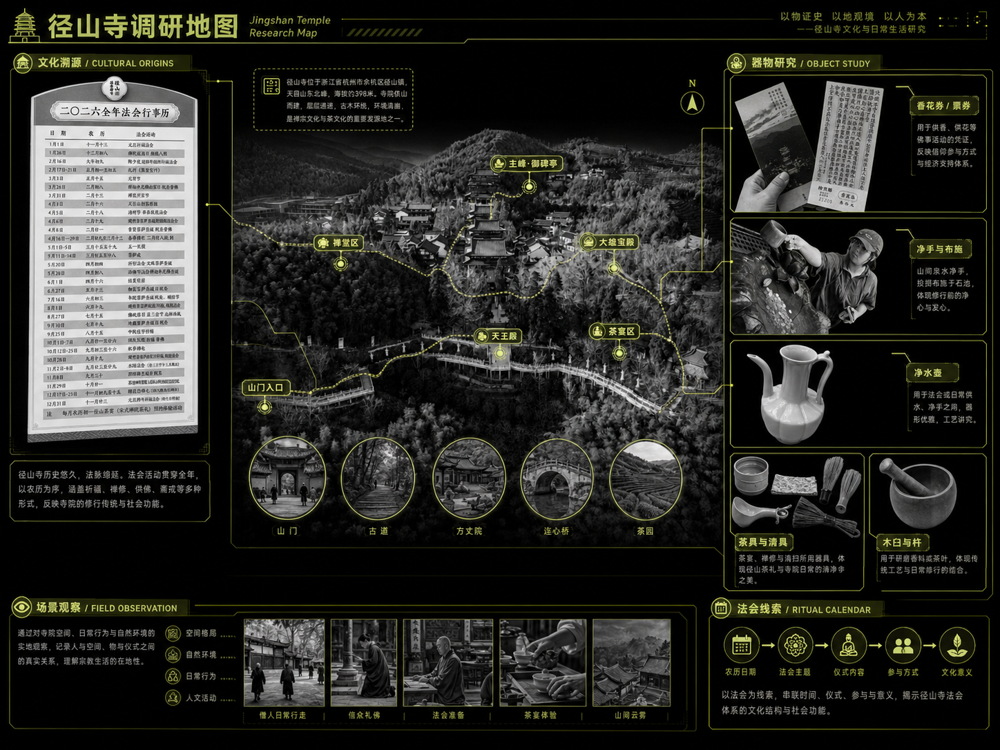

让茶山先被听见
听钟入拍，依次采集茶芽。声音与节奏是进入茶事的第一步。
- 听辨节拍
- 点击茶芽
- 收集茶音

从径山寺茶宴出发，把文化知识放回真实的动作、器物与声音之中。
 碎茶
碎茶
 碾茶
碾茶
 罗茶
罗茶
 茶末置盒
茶末置盒
 撮末于盏
撮末于盏
 点茶
点茶
 搅拌茶沫
搅拌茶沫
 置茶托
置茶托

采集茶音、准备茶末、学习茶礼，最终用击拂奏出一盏茶。
听钟入拍，依次采集茶芽。声音与节奏是进入茶事的第一步。

滑动碾碎茶团，筛出细末；收集的音粒逐步组成循环声部。
丁字步、持盏与奉茶被转译为体感判定，让茶礼成为可学习的动作。

沿盏沿转圈接住涟漪，随波形切换手势；茶筅的动作与音乐、水纹和粒子相互呼应。
点击关卡切换设计画面
接住、猛切与停手各有时机。动作改变茶沫状态，也改变音乐中的反馈。
从茶粉状态进入击拂
绕圈，在盏沿接住涟漪
长波停留时持续击拂
停手等待，避开红波


从器物的轮廓提取冠、衣与姿态，让十二茶先生成为认识茶具的入口。


茶筅的细密线条，延伸成冠。
汤瓶的曲线，展开为衣。
茶盏的轮廓，成为捧茶的姿态。
以纱幕和投影延伸数字画面，让角色与粒子围绕真实器物展开。


环形动线连接观看、停留与交互。中央的围合茶室，让击拂成为空间中的体验核心。

展具从传统器物与建筑形态中提取结构；茶杯与茶模，把游戏奖励延续成亲手完成的茶百戏。


文化研究、游戏系统、空间与器物的完整记录。